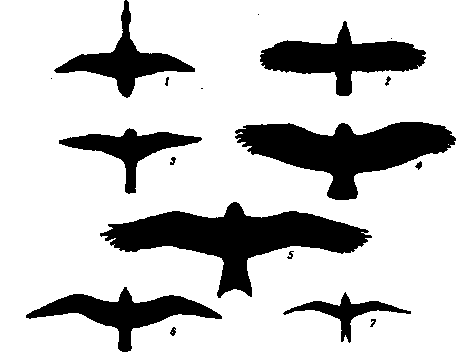

Главная > Внешний вид
Крылья и обтекаемая форма телаОбтекаемая - форма тела у птиц помагает развивать большую скорость, что очень важно для их полёта.  Силуэты летящих птиц Ради способности летать все в организме птицы подверглось изменениям. Тело стало обтекаемым, мышцы и кости видоизменились так, чтобы увеличилась развиваемая ими сила и уменьшился вес тела. В связи с высокими энергетическими потребностями развились исключительно эффективные легкие и система кровообращения. Пища птиц высококалорийна, пищеварительная система обеспечивает ее быстрое переваривание. Только у птиц есть перья, которые играют важную роль в полете и в регуляции температуры тела. Сокол летящий против ветра Птицы летают, буквально махая руками. Крыло аналогично человеческой руке, а его части соответствуют плечу, локтю, запястью и кисти. Однако в отличие от руки крыло двигается свободно только в плечевом суставе. Мышцы самого крыла обеспечивают его складывание и управляют положением отдельных перьев. Эти мышцы невелики, и их вклад в сопротивление воздуху при полете мал. Сила для полета создается массивными мышцами, прикрепленными к грудине и соединенными сухожилиями с костями крыла. Когда грудные мышцы сокращаются, они тянут сухожилия, которые, в свою очередь, приводят в движение крылья. Одна группа грудных мышц обеспечивает мах вниз, меньшая группа - вверх. Крыло покрыто кожей и перьями. Мелкие кроющие перья прилегают к телу и служат защитой для кожи. Большие маховые перья создают тягу и подъемную силу. Строение крыла У птиц многие кости полые, укрепленные внутренними перегородками, распорками. Массивные грудные мышцы опускают крыло вниз; меньшие по размеру - поднимают его. По внешнему краю крыла расположены маховые перья первого порядка, участвующие в создании тяги и управлении полетом. Маховые перья второго порядка создают подъемную силу. Хотя в принципе все крылья устроены одинаково, их особенности связаны с образом жизни птицы. У таких наземных птиц, как фазан и перепел, крылья короткие и закругленные, что позволяет им почти вертикально взлетать и быстро скрываться. У ласточек, стрижей и других «лихачей» открытых пространств крылья узкие серповидные. Крупные неморские парящие птицы, например кондоры и орлы, имеют длинные и широкие крылья.
Андский кондор Кондоры способны к парящему полету. Их длинные и широкие с прорезями крылья позволяют управлять движением в воздушных потоках. | ||